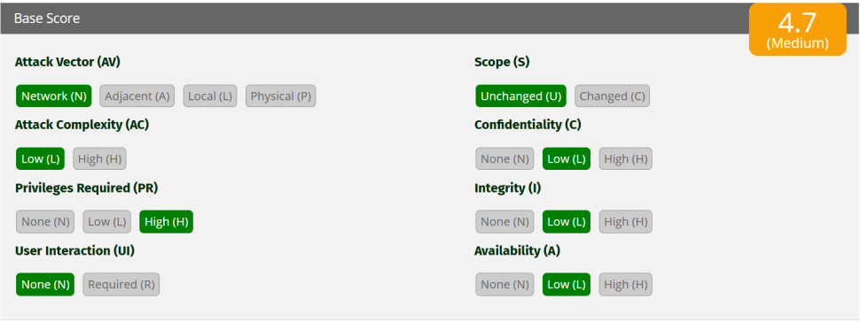
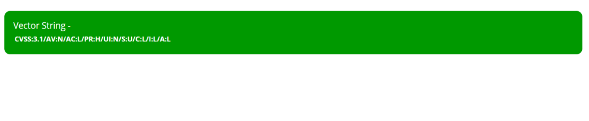

OBJETIVO GENERAL
Aplicar el modelo CVSS v3.1 para evaluar la gravedad de vulnerabilidades reales, interpretando correctamente sus métricas base y justificando la priorización del riesgo en un contexto organizacional.
OBJETIVOS ESPECÍFICOS
- Identificar y comprender las métricas base de CVSS (AV, AC, PR, UI, S, C, I, A).
- Construir correctamente una cadena vector CVSS a partir de un escenario técnico.
- Calcular e interpretar la puntuación de riesgo para priorizar acciones de mitigación.
CONTENIDO
- 1. INTRODUCCIÓN .................................... 2
- 2. ESCENARIO DE EVALUACIÓN .......................... 2
- 3. DESARROLLO TÉCNICO ............................... 3
- 3.1 Construcción del Vector CVSS ................. 3
- 3.2 Justificación de las Métricas ................ 3
- 4. INTERPRETACIÓN TÉCNICA .......................... 4
- 5. CÁLCULO DE PUNTUACIÓN ........................... 5
- Evidencia Visual ................................. 5
- 6. CONCLUSIÓN ...................................... 6
1. INTRODUCCIÓN
El objetivo de esta actividad es aplicar el estándar internacional CVSS v3.1 (Common Vulnerability Scoring System) para cuantificar la severidad de una vulnerabilidad detectada en un entorno web interno. Este proceso permite a las organizaciones priorizar la mitigación de riesgos basándose en datos técnicos objetivos y medibles.
2. ESCENARIO DE EVALUACIÓN
Se presenta el siguiente caso de estudio para su análisis y evaluación técnica:
Descripción del Escenario:
Una organización detecta una vulnerabilidad en un sistema web interno con las siguientes características:
- Puede explotarse a través de la red.
- La explotación requiere baja complejidad.
- Se necesitan privilegios elevados.
- No requiere interacción del usuario.
- No cambia el alcance.
- El impacto en Confidencialidad, Integridad y Disponibilidad es Bajo.
3. DESARROLLO TÉCNICO
3.1 Construcción del Vector CVSS
Basado en los parámetros del escenario, se ha generado la siguiente cadena de vector, la cual resume de forma técnica todas las métricas base:
3.2 Justificación de las Métricas
| Métrica | Valor | Sigla | Razón Técnica |
|---|---|---|---|
| Vector de ataque | Red | AV:N | La vulnerabilidad se explota de forma remota sobre el protocolo de red. |
| Complejidad | Bajo | AC:L | No existen barreras de seguridad adicionales que dificulten el ataque. |
| Privilegios req. | Alto | PR:H | El atacante debe estar autenticado con permisos de administrador. |
| Interacción | Ninguno | UI:N | La vulnerabilidad puede ejecutarse sin ayuda de terceros. |
| Alcance | Sin cambios | S:U | El impacto queda confinado estrictamente al sistema web afectado. |
| Impacto CIA | Bajo | C:L/I:L/A:L | La pérdida de confidencialidad, integridad y disponibilidad es parcial. |
4. INTERPRETACIÓN TÉCNICA
Análisis cualitativo:
A pesar de que el requisito de privilegios elevados (PR:H) actúa como un control de seguridad inicial, la vulnerabilidad no pierde relevancia en una auditoría. En un entorno de producción, un atacante que logre comprometer una cuenta administrativa a través de otros vectores (como fuerza bruta o phishing) utilizaría este fallo para realizar movimientos laterales o alterar información interna del sistema sin dejar rastro de interacción con el usuario.
El perfil de atacante suele ser un insider (empleado deshonesto) o un actor externo persistente. Dado que el impacto es Bajo en las tres dimensiones de la seguridad, la explotación no implica un desastre total de la infraestructura, pero sí una degradación de la confianza en los datos manejados por la aplicación.
5. CÁLCULO DE PUNTUACIÓN
Se utilizó la calculadora oficial del FIRST (Forum of Incident Response and Security Teams) para procesar el vector anterior.
- Puntuación Base: 4.3
- Clasificación de Severidad: Media (Rango 4.0 - 6.9)
Evidencia Visual
CAPTURA 1: CONFIGURACIÓN:

Interfaz de la calculadora FIRST con las métricas base seleccionadas.
CAPTURA 2: RESULTADO:

Cadena de Vector String generada automáticamente.
6. CONCLUSIÓN
La evaluación mediante el modelo CVSS v3.1 arroja un resultado de 4.3, situando esta vulnerabilidad en una categoría de Severidad Media.
Desde una perspectiva de gestión de riesgos, esta vulnerabilidad debe ser registrada en el inventario de seguridad de la organización y se recomienda su remediación una vez que las vulnerabilidades "Críticas" (9.0+) y "Altas" (7.0+) hayan sido mitigadas. La principal medida preventiva para este caso específico es el fortalecimiento del control de acceso y el monitoreo estricto de las cuentas con privilegios administrativos para evitar que esta brecha sea utilizada en ataques de mayor escala.